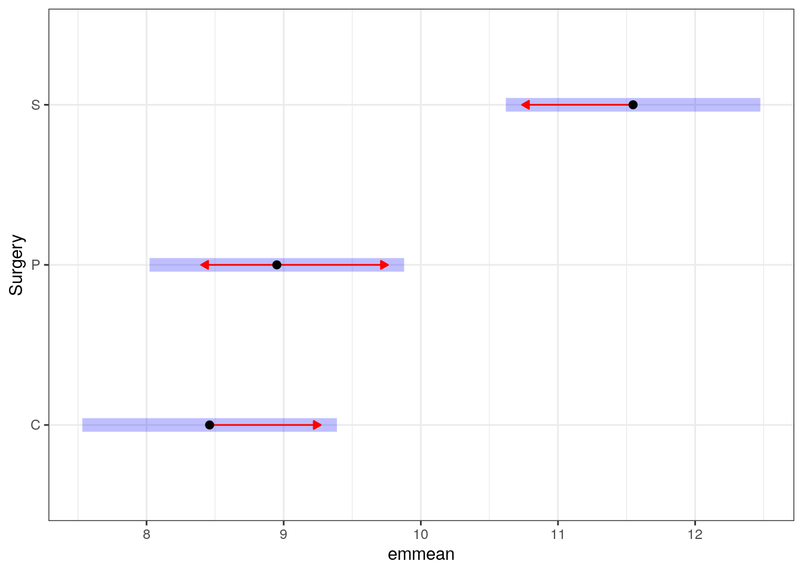

Multiple comparisons
Recall that each time we carry out a hypothesis test the probability we get a false positive result (type I error) is given by \(\alpha\) (the level of significance we choose).
When we have multiple comparisons to make we should then control the Type I error rate across the entire family of tests under consideration, i.e., control the Family-Wise Error Rate (FWER); this ensures that the risk of making at least one Type I error among the family of comparisons in the experiment is \(\alpha\).
| State of Nature | Don't reject \(H_0\) | reject \(H_0\) |
|---|---|---|
| \(H_0\) is true | ✅ | Type I error |
| \(H_0\) is false | Type II error | ✅ |
The familywise error rate (FWER) is the risk of making at least one Type I error among the family of comparisons in the experiment. Now let's consider carrying out \(m\) independent t-tests and let for any single test, let Pr(commit a Type 1 error) \(= \alpha_c\) be the per comparison error rate (PCER). So for a single test the probability a correct decision is made is \(1 - \alpha_c\). Therefore for \(m\) independent t-tests the probability of committing no Type I errors is \((1 - \alpha_c)^m\) and the probability of committing at least one Type I error is \(1 -(1 - \alpha_c)^m = \alpha_F\) which is the upper limit of the FWER.
The False Discovery Rate (FDR) controls the expected (mean) proportion of false discoveries among the \(R\) (out of \(m\)) hypotheses declared significant.
Consider testing \(m\) null hypotheses with corresponding p-values \(P_1, P_2,...,P_m\); we then order then so that \(P_{(1)} < P_{(2)} <...<P_{(m)}\) (where \(P_{(i)}\) is the \(i^{th}\) largest \(i=1,...,m\)). The \(i^{th}\) ordered p-value is calculated as \(\frac{i}{m}q^*\) and the \(i^{th}\) null hypothesis is rejected if \(P_i \leq \frac{i}{m}q^*\)

Adjustments for multiple testing
Calculating 95% confidence intervals for pairwise comparisons is similar to the procedure discussed in module 2:
\[\text{95% CI} = \text{estimate} \pm (\text{scale factor} \times \text{standard error}_\text{of estimate}).\] For the 95% CI for pairwise comparisons of means this becomes
\[\text{95% CI} = \text{difference} \pm (\text{scale factor} \times \text{SED}),\] where SED is the standard error of the difference (which depends on group replication). The choice of scale factor depends on what adjustments we might want to make. Below we cover three common adjustments. Specifically where (scale factor × SED) is the 1) Fisher correction LSD, 2) Bonferroni correction LSD, and 3) Tukey's HSD.
Fisher’s Least Significant Difference (LSD)
To calculate the LSD the \(t\)-distribution is used, specifically the \[t_{\alpha = \frac{\alpha_c}{2}, \text{df} = N - m}\] distribution, where \(N\) is the number of observations and \(m\) is the number of treatment groups. To obtain the critical value for $_c = 0.05 $, \(N = 12\) and \(m = 3\) the following code can be used in R.
qt(p = 0.05/2,df = 12 - 3, lower.tail = FALSE)## [1] 2.262157Fisher's LSD is then \[t_{\alpha = \frac{\alpha_c}{2}, \text{df} = N - m} \times \text{SED}.\]
Here we carry out post-hoc tests only if the ANOVA F-test is significant. If so declare significant \(100\alpha\%\) any pairwise difference > LSD. This does not control the FWER.
Bonferroni correction
To calculate Bonferroni correction the \(t\)-distribution is used, specifically the \[t_{\alpha = \frac{\alpha_c}{2 \times k}, \text{df} = N - m}\] distribution, where \(N\) is the number of observations, \(m\) is the number of treatment groups, and \(k = {m \choose 2}\) is the number of pairwise comparisons being made.
To obtain the critical value for $_c = 0.05 $, \(N = 12\) and \(m = 3\) the following code can be used in R.
qt(p = 0.05/(2 * choose(3,2)),df = 12 - 3, lower.tail = FALSE)## [1] 2.933324Bonferroni's LSD is then \[t_{\alpha = \frac{\alpha_c}{2 \times k}, \text{df} = N - m} \times \text{SED}.\]
Here we reject the \(H_0\) for which the p-value, p-val, is p-val \(< \alpha_c = \frac{\alpha_f}{n_c}\) where \(\alpha_f\) is the FWER and \(n_c\) is the number of pairwise comparisons. However, this makes no assumptions about independence between tests.
Tukey’s Honest Significant Difference (HSD)
This compares the mean of every treatment with the mean of every other treatment and uses a studentised range distribution compared with a \(t\)-distribution for Fisher's LSD and the Bonferroni correction. Therefore to calculate the HSD the studentised range distribution is used, specifically the \[q_{ 1- \alpha_c, m, \text{df} = N - m}\] distribution, where \(N\) is the number of observations, \(m\) is the number of treatment groups, and \(q_{\alpha,m,\text{df}}\) quantile of the studendised distribution.
To obtain the critical value for $_c = 0.05 $, \(N = 12\) and \(m = 3\) the following code can be used in R.
1 - qtukey(p = 1 - 0.05, nmeans = 3, df = 12 - 3)## [1] -2.948492Tukey's HSD is given by \[\frac{q_{ 1 - \alpha_c, m, \text{df} = N - m}}{\sqrt{2}} \times \sqrt{\frac{2\hat{\sigma}^2}{n}}.\] Here \(\hat{\sigma}^2\) is the Residual Mean Square Error and \(n\) is the assumed equal number of replicates in each group.
Classification of multiple hypothesis tests
Suppose we have a number \(m\) of null hypotheses, \(H_1, H_2, ..., H_m\). Using the traditional parlance we reject the null hypothesis if the test is declared significant and have no evidence to reject the null hypothesis if the test is "not significant". Now, summing each type of outcome over all \(H_i (i = 1.,..,m)\) yields the following random variables:
| Null hypothesis is true (H0) | Alternative hypothesis is true (HA) | Total | |
|---|---|---|---|
| Test is declared significant | V | S | R |
| Test is declared non-significant | U | T | m - R |
| Total | \(m_{0}\) | \(m - m_0\) | m |
- \(m\) is the total number hypotheses tested
- \(m_{0}\) is the number of true null hypotheses, an unknown parameter
- \(m - m_0\) is the number of true alternative hypotheses
- \(V\) is the number of false positives (Type I error) (also called false discoveries)
- \(S\) is the number of true positives (also called true discoveries)
- \(T\) is the number of false negatives (Type II error)
- \(U\) is the number of true negatives
- \(R=V+S\) is the number of rejected null hypotheses (also called discoveries, either true or false)
Multiple comparison procedures
Recall the CRD rats data
| Surgery | Rat | logAUC |
|---|---|---|
| C | 1 | 8.49 |
| C | 2 | 8.20 |
| C | 3 | 9.08 |
| C | 4 | 8.07 |
| P | 1 | 10.24 |
| P | 2 | 7.72 |
| P | 3 | 9.34 |
| P | 4 | 8.50 |
| S | 1 | 11.31 |
| S | 2 | 12.69 |
| S | 3 | 11.37 |
| S | 4 | 10.82 |
You can read this data directly into R using
rats <- readr::read_csv("https://raw.githubusercontent.com/STATS-UOA/databunker/master/data/crd_rats_data.csv")To use predictmeans later on we have to ensure that the relevant variables are coded as factors:
rats <- rats %>%
mutate(Surgery = as.factor(Surgery))We can fit a linear model using lm():
rats_lm <- lm(logAUC ~ Surgery, data = rats)
coef(rats_lm)## (Intercept) SurgeryP SurgeryS
## 8.4600 0.4900 3.0875Our fitted model is therefore
\[ \begin{aligned} \operatorname{\widehat{logAUC}} &= 8.46 + 0.49(\operatorname{Surgery}_{\operatorname{P}}) + 3.09(\operatorname{Surgery}_{\operatorname{S}}) \end{aligned} \]
Using predictmeans
By default Fisher's comparisons are made.
pm <- predictmeans::predictmeans(rats_lm , modelterm = "Surgery",
pairwise = TRUE, plot = FALSE)
str(pm)## List of 10
## $ Predicted Means : 'xtabs' num [1:3(1d)] 8.46 8.95 11.55
## ..- attr(*, "dimnames")=List of 1
## .. ..$ Surgery: chr [1:3] "C" "P" "S"
## ..- attr(*, "call")= language xtabs(formula = pm ~ ., data = mt[, c("pm", vars)], drop.unused.levels = TRUE)
## $ Standard Error of Means : Named num 0.41
## ..- attr(*, "names")= chr "All means have the same Stder"
## $ Standard Error of Differences: Named num [1:3] 0.58 0.58 0.58
## ..- attr(*, "names")= chr [1:3] "Max.SED" "Min.SED" "Aveg.SED"
## $ LSD : Named num [1:3] 1.31 1.31 1.31
## ..- attr(*, "names")= chr [1:3] "Max.LSD" "Min.LSD" "Aveg.LSD"
## ..- attr(*, "Significant level")= num 0.05
## ..- attr(*, "Degree of freedom")= num 9
## $ Pairwise LSDs : num [1:3, 1:3] 0 1.31 1.31 -0.49 0 ...
## ..- attr(*, "dimnames")=List of 2
## .. ..$ : chr [1:3] "C" "P" "S"
## .. ..$ : chr [1:3] "C" "P" "S"
## ..- attr(*, "Significant level")= num 0.05
## ..- attr(*, "Degree of freedom")= int 9
## ..- attr(*, "Note")= chr "LSDs matrix has mean differences (row-col) above the diagonal, LSDs (adjusted by 'none' method) below the diagonal"
## $ Pairwise p-value : num [1:3, 1:3] 0 0.4202 0.0005 -0.8446 0 ...
## ..- attr(*, "dimnames")=List of 2
## .. ..$ : chr [1:3] "C" "P" "S"
## .. ..$ : chr [1:3] "C" "P" "S"
## ..- attr(*, "Degree of freedom")= int 9
## ..- attr(*, "Note")= chr "The matrix has t-value above the diagonal, p-value (adjusted by 'none' method) below the diagonal"
## ..- attr(*, "Letter-based representation of pairwise comparisons at significant level '0.05'")='data.frame': 3 obs. of 3 variables:
## .. ..$ Treatment: chr [1:3] "S" "P" "C"
## .. ..$ Mean : num [1:3] 11.55 8.95 8.46
## .. ..$ Group : chr [1:3] "A " " B" " B"
## $ predictmeansPlot : NULL
## $ predictmeansBarPlot : NULL
## $ mean_table :'data.frame': 3 obs. of 7 variables:
## ..$ Surgery : Factor w/ 3 levels "C","P","S": 1 2 3
## ..$ Predicted means: num [1:3] 8.46 8.95 11.55
## ..$ Standard error : num [1:3] 0.41 0.41 0.41
## ..$ Df : int [1:3] 9 9 9
## ..$ LL of 95% CI : num [1:3] 7.53 8.02 10.62
## ..$ UL of 95% CI : num [1:3] 9.39 9.88 12.48
## ..$ LetterGrp : chr [1:3] "A " "A " " B"
## $ p_valueMatrix : NULL
## - attr(*, "class")= chr "pdmlist"Let's look at some of the pm elements more closely:
pm$mean_table## Surgery Predicted means Standard error Df LL of 95% CI UL of 95% CI LetterGrp
## 1 C 8.4600 0.4102531 9 7.531943 9.388057 A
## 2 P 8.9500 0.4102531 9 8.021943 9.878057 A
## 3 S 11.5475 0.4102531 9 10.619443 12.475557 BThis gives us the estimated group means and associated 95% CIs. Why are the standard errors all equal?
But, what we'd like is the pairwise comparisons between groups. Information pertaining to this is also returned:
print(pm$`Pairwise p-value`)## C P S
## C 0.0000 -0.8446 -5.3216
## P 0.4202 0.0000 -4.4770
## S 0.0005 0.0015 0.0000
## attr(,"Degree of freedom")
## [1] 9
## attr(,"Note")
## [1] "The matrix has t-value above the diagonal, p-value (adjusted by 'none' method) below the diagonal"
## attr(,"Letter-based representation of pairwise comparisons at significant level '0.05'")
## Treatment Mean Group
## 1 S 11.5475 A
## 2 P 8.9500 B
## 3 C 8.4600 BThis gives us the pairwise comparison statistic (the \(t\)-statistic in this case) on the upper diagonal and the associated p-value's on the lower diagonal.
What about the 95%CI for the comparisons? Luckily predictmeans also returns the pairwise LSD values (Fisher's by default with \(\alpha_c = 0.05\)):
pm$`Pairwise LSDs`## C P S
## C 0.00000 -0.49000 -3.0875
## P 1.31247 0.00000 -2.5975
## S 1.31247 1.31247 0.0000
## attr(,"Significant level")
## [1] 0.05
## attr(,"Degree of freedom")
## [1] 9
## attr(,"Note")
## [1] "LSDs matrix has mean differences (row-col) above the diagonal, LSDs (adjusted by 'none' method) below the diagonal"Here, the upper diagonal matrix has the pairwise differences and the lower has the LSD values.
Fisher’s LSD
So, we have all the information to construct the Fisher LSD 95% CIs! You could extract all the information and construct a pairwise comparison table manually, or use a pre-written function (aren't I nice to provide one!):
url <- "https://gist.github.com/cmjt/72f3941533a6bdad0701928cc2924b90"
devtools::source_gist(url, quiet = TRUE)
comparisons(pm)## Comparison Difference SED LSD lwr upr t p
## 1 C-P -0.490 0.58 1.312 -1.802 0.822 -0.845 0.4202
## 2 C-S -3.087 0.58 1.312 -4.400 -1.775 -5.322 0.0005
## 3 P-S -2.598 0.58 1.312 -3.910 -1.285 -4.477 0.0015Bonferroni correction
To use the Bonferroni correction we must now calculate and specify the adjusted \(\alpha_b = \frac{\alpha_b}{n_c}\), in our case this is \(\frac{0.05}{{3 \choose 2}}\). We also specify adj = "bonferroni":
alpha.adj <- 0.05/choose(3,2)
bonferroni <- predictmeans::predictmeans(rats_lm ,
modelterm = "Surgery", adj = "bonferroni",
level = alpha.adj,
pairwise = TRUE, plot = FALSE)
comparisons(bonferroni)## Comparison Difference SED LSD lwr upr t p
## 1 C-P -0.490 0.58 2.101 -2.591 1.611 -0.845 1.0000
## 2 C-S -3.087 0.58 2.101 -5.189 -0.986 -5.322 0.0014
## 3 P-S -2.598 0.58 2.101 -4.699 -0.496 -4.477 0.0046Tukey’s Honest Significant Difference (HSD)
Things are a bit more cumbersome when it comes to Tukey's HSD. We can specify adj = "tukey" in predictmeans:
tukey <- predictmeans::predictmeans(rats_lm ,
modelterm = "Surgery", adj = "tukey",
level = alpha.adj,
pairwise = TRUE, plot = FALSE)
names(tukey)## [1] "Predicted Means" "Standard Error of Means"
## [3] "Standard Error of Differences" "LSD"
## [5] "Pairwise p-value" "predictmeansPlot"
## [7] "predictmeansBarPlot" "mean_table"
## [9] "p_valueMatrix"However, the HSD values are not returned, so we cannot calculate out pairwise CIs. R has an inbuilt function TukeyHSD that does this for us, but as we can see below the HSD values are not returned.
TukeyHSD(aov(logAUC~Surgery, data = rats))## Tukey multiple comparisons of means
## 95% family-wise confidence level
##
## Fit: aov(formula = logAUC ~ Surgery, data = rats)
##
## $Surgery
## diff lwr upr p adj
## P-C 0.4900 -1.1298813 2.109881 0.6863267
## S-C 3.0875 1.4676187 4.707381 0.0012479
## S-P 2.5975 0.9776187 4.217381 0.0039400From above we saw that Tukey's HSD was given by
\[\frac{q_{1-\alpha_c, m, \text{df} = N - m}}{\sqrt{2}} \times \sqrt{\frac{2\hat{\sigma}^2}{n}}.\]
We can calculate \(q_{1 - \alpha_c, m, \text{df} = N - m}\) for our data using
qtukey(p = 1- 0.05, nmeans = 3, df = 12 - 3)## [1] 3.948492Assuming equal replicates (\(n = 4\), with \(\hat{\sigma}^2\) as above) we calculate the SED as
sqrt(2 * anova(rats_lm)[2,3] / 4)## [1] 0.5801856Therefore, Tukey's HSD is \(\frac{3.9484922}{\sqrt{2}}\times 0.5801856 = 1.6198813.\)
To calculate the CIs we use \(\text{difference} \pm \text{HSD}\):
HSD <- (qtukey(p = 1 - 0.05, nmeans = 3, df = 12 - 3)/sqrt(2))*sqrt(2 * anova(rats_lm)[2,3] / 4)
all_diffs <- outer(tukey$`Predicted Means`, tukey$`Predicted Means`, "-")
comparison_table <- data.frame(differences = all_diffs[lower.tri(all_diffs)]) %>%
mutate(upper = differences + HSD, lower = differences - HSD, HSD = HSD)
comparison_table## differences upper lower HSD
## 1 0.4900 2.109881 -1.1298813 1.619881
## 2 3.0875 4.707381 1.4676187 1.619881
## 3 2.5975 4.217381 0.9776187 1.619881This matches the output from TukeyHSD() above!
What about the values returned by predictmeans()?
print(tukey$`Pairwise p-value`)## C P S
## C 0.0000 -0.8446 -5.3216
## P 0.6863 0.0000 -4.4770
## S 0.0012 0.0039 0.0000
## attr(,"Degree of freedom")
## [1] 9
## attr(,"Note")
## [1] "The matrix has t-value above the diagonal, p-value (adjusted by 'tukey' method) below the diagonal"
## attr(,"Letter-based representation of pairwise comparisons at significant level '0.0166666666666667'")
## Treatment Mean Group
## 1 S 11.5475 A
## 2 P 8.9500 B
## 3 C 8.4600 BThere is an easier way to see the same pairwise contrasts using the emmeans function from the package of the same name and the pairs function:
em <- emmeans::emmeans(rats_lm, specs = "Surgery")
pairs(em, adjust = "tukey")## contrast estimate SE df t.ratio p.value
## C - P -0.49 0.58 9 -0.845 0.6863
## C - S -3.09 0.58 9 -5.322 0.0012
## P - S -2.60 0.58 9 -4.477 0.0039
##
## P value adjustment: tukey method for comparing a family of 3 estimatesThis, gives us the same information as predictmeans but in an easier to read format (still no CIs though, we still have to calculate those ourselves!)
However, the emmeanspackage facilitates some nice plotting of the pairwise comparisons:
plot(em, comparisons = TRUE) + theme_bw()